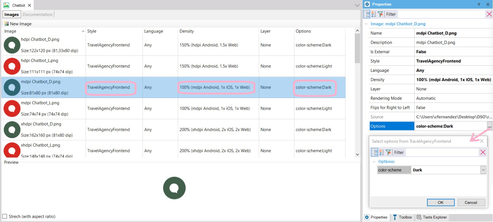
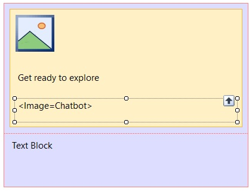

Design System Object - How to change an image according to the Design System Object option
This article describes how to change the Image object named chatbot according to the Light or Dark color-scheme.
As you can see in the design, in Light mode it is red and in Dark mode it is green:
For this, it is enough to define the variable image by Option in the definition of the image object itself in the Knowledge Base:

The GeneXus Image object named Chatbot is varied by Style (DSO), image density, and color-scheme option.

Note: since it is not yet possible to set which DSO design options will be the default values (in this case, the default color-scheme should be Light), it will not know which image to show in the layout and therefore the following will be displayed instead of the image:

Here you can download a ZIP file with an XPZ and the images for the chatbot.
Availability
Since GeneXus 17 upgrade 6.
| Backlinks | |
| Toc:Design Systems | Options property |